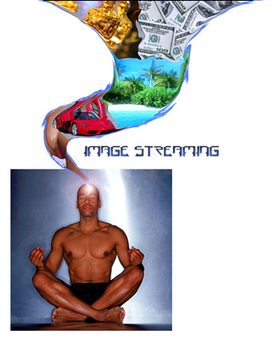

GENIUS HOME -
Reader's Creative Thinking
Questions : How to re-start image
streaming...
How To Trigger Image Streaming
Filip has mastered his
mind and made it silent but wants to be able to do image
streaming...

Filip wrote to me recently with the following question:
From: Filip
To: wily[at}wilywalnut.com
Subject: info image streaming
Date: Mon, 14 Jul 2008
Great Day
I contact you concerning the image streaming
process
I trained myself to make silence in
the head and therefore images are appearing very very
rarely.
I tried many many times and for hours, days. I end up
sleeping most of the time and in the dream I have the
answer of the question. It is fantastic, but it is not
image streaming and therefore is a shame because i think
this is one of the greatest tools.
Thank you for the great help of
yours
Sincerely,
Filip
Here is my reply:
Hello Flip,
Thank you so much for your email and for sharing your
experiences.
Your description reminds me of something I read in a book
on Tibetan Lucid Dreaming practice. In the West, lucid
dreaming is used as a tool of exploration, fun, and
adventure. In Tibetan Buddhist traditions they attempt to
become lucid in the dream in order to continue meditation
practice into their sleep, with the ultimate goal of
attaining 'the clear light'... a state of no-mind, or
ultimate expanded consciousness.
How did you train yourself to 'make silence in the
head'?
What processes or practices did you do to achieve that
result? And when you did consistently achieve that inner
silence what affect did that have on your state of
consciousness?
You say that you still dream while you are asleep (and that
you get answers to questions in your dreams -- which is
fantastic!). So, we know that the image stream is still
working at night. You just want to activate it again during
the day.
Here's how I suggest you do
that:
1. If you stand on a skateboard on level ground, it won't
move. You have to put one foot on the ground and push
several times to get the board moving and then you can put
both feet on the board and the skateboard will continue
moving, and you can keep it moving with occasional extra
pushes on the ground. We need to do the same thing to get
your image stream moving again. And you will engage your
imagination to 'push' and get the image stream going
again...
2. Close your eyes and imagine a scene. You could start by
remembering some place that you visited yesterday. Just
recall the images to your mind. Replay any scenes where you
talked with someone, or any actions that you took. When
you've done that, open your eyes.
3. Good, you've made a good start. Close your eyes again,
and this time imagine yourself back in that scene, but this
time I want you to imagine a big pink elephant standing
nearby, pulling bananas from a great big bunch of bananas.
When you've done that, open your eyes. You're doing
great.
4. Look at the back of your hands. Really notice everything
about them. The texture of the skin, the knuckles, the
fingernails. Turn them over and look at your palm, observe
the lines. Now close your eyes, and see the your hands
again in your mind's eye. Imagine clapping them together,
hard. Imagine the clap and the sting of your palms, and the
way they feel all tingly afterwards. Okay, open your eyes
and give yourself a pat on the back, because you are doing
great at this...
5. Okay, now, with your eyes open, I want you to think of a
giraffe. Now, I want you to think of a bus. Got that? Okay,
now I want you to combine the two and think of a giraffe
bus. How does that look? Got it? Now think of a big tree.
And when you've thought of that, think of a tall apartment
block. And then combine the two...a big tree that is an
apartment block. You only need to get a fleeting impression
of this.
5. Okay, look at some man-made thing in the room where you
are now. Really concentrate on it for about 30 seconds.
Then ask yourself, where did that come from? How was it
made? Try and think of where it originally came from, think
of all the people involved in coming up with the original
idea, developing the idea, setting up to manufacture it,
getting the raw materials, building the factory perhaps to
make them in, all the workers, then the people and
processes involved in packing it, selling it, distributing
it, selling it through wholesale outlets and then into
retail stores and so on. Think of everything involved, the
long chain of events and people, that resulted in that
thing being there in your room before you.
6. Okay, when you've done that, just close your eyes and
describe aloud whatever images and impressions are in your
mind right now.
7. If there is still nothing but the silence, look at the
velvety blackness on the inside of your eyelids and
describe any patterns of light or lines or blobs or
blurry shapes that form there. You can lightly press on
your eyelids with your fingertips to cause these to appear.
Keep describing them and allow them to morph into shapes
and things, and keep describing them. At some point you
will start to slide into seeing snatches of imagery,
perhaps even a full blown day dream which you can describe
aloud.
8. Remember, engage your imagination whenever you want to
kick-start the image streaming process. To do this you can
fantasize or day dream about things you want or wish to
happen, you can include sexual imagery as that can help
launch your inner eye very well. Or you can use guided
visualization exercises or even goal visualization and just
describe aloud what you are actively and deliberately
visualizing. This will give you the same effects as image
streaming.
I hope these ideas prove to be helpful to you, Filip, and I
look forward to hearing from you again soon.
Warmest Regards,
Wily Walnut
Related Articles:
|
THE BRAIN
SQUEEZER
NEWSLETTER!
Sign-Up For Wily Walnut's "The Brain
Squeezer" Newsletter and learn to squeeze all
the creative thinking juices from your brain!
Get your juiciest ideas and genius IQ power
flowing!
Wily Walnut:
Discover How To Banish The
Inner Moron, Shake Off the Dust Of
Mediocrity and Discover the Genius
You Were Born To Be!
|
Wily Walnut is the headbrain
at http://www.WilyWalnut.com
, your top
resource for unleashing the genius within,
becoming infinitely creative, intelligent and
brilliant in all that you
do!
GENIUS ARTICLES
HOME IQ TESTS - CREATIVITY - GENIUS - BRAIN STORMING - SELF-HELP - BRAINTEASERS - WILY WALNUT


|